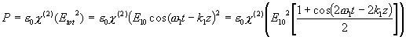
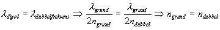
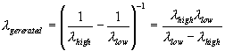

Ickelinjär optik
I de allra flesta situationer är ljus ett linjärt fenomen, dvs två eller flera ljusfält kan gå igenom varandraöverlappa eller t.o.m. krocka utan att något händer
. Interferens (där ju flera fält samverkar) innebär att man vid detektion ser effekter av bägge fältens samverkan, men inte att det ena styr det andra eller övergår i det andra).Vid höga lasereffektkoncentrationer och/eller i vissa material är detta emellertid inte sanning längre, utan ljusstrålar kan förändras. För att detta ska ske måste materialet ljuset passerar genom delta. Vi använder här en förklringsmodell som liknar den
vi använde i kap 4 för att förklara brytningsindex.Där sade vi bland annat att vanligt brytningsindex (inbromsning av ljuset) uppkommer pga att en foton som kommer tillräckligt nära en atom stannar upp för att genomföra en handskakningsprocess, varefter den återutsänds i samma riktning och med samma övriga egenskaper den hade innan händelsen, bara något försenad. Den tid atomen hade på sig för handskakningsprocessen ligger i storleksordningen femtosekunder.
Om nu två fotoner träffar samma atom under denna mycket korta tid kan bägges energi lagras i atomen under den mycket korta tiden, och när denna löpt ut utsänds ljusenergin som en foton (inte två) vilket utifrån sett verkar vara en fusion av atomer. Denna fusion inträffar bara om både energi och rörelsemängd kan bevaras vid händelsen.
I de tillfällen detta går öppnar sig emellertid en helt ny flora av fenomen. Man kan göra frekvensdubbling (som i exemplet ovan) dvs ljus kan ges kortare våglängd. Man kan generera skillnadsfrekvenser och summafrekvensen.
..och kanske viktigare: man kan förstärka ljus med responstider som ligger storleksordningar under de man får i en laserförstärkare. För att förstå möjlghet och problem måste vi nog dyka ner i lite matte:
Nivå 2
Antag att vi har ett material där dipolernas svängning (se kap 4 igen) har ett kvadratiskt boidrag av E-fältet (förutom det vanliga linjära). Vad uppkommer då för fenomen?

Vi får tydligen ett bidrag som svänger med dubbla frekvsen dvs halva våglängden. Detta innebär att materialets dipoler svänger med den frekvensen. Om denna svängning kan åstadkomma en ljusvåg vid den nya frekvensen beror på om dipolerna i hela materialet svänger i takt med denna nya våg. Kravet på att de ska göra så kallas fasmatchningskravet. I ord kan detta uttryckas som att våglängden för dipolernas svängning måste motsvara dubbelfrekvensens våglängd, dvs:

dvs det blir en ny våg om brytningsindex inte varierar med våglängden på ljuset. Sådana material finns inte! Detta innebär inte att vi kan stänga butiken och gå hem, utan att vi måste använda material med
dubbelbrytning (eller komma på något ännu mer exotiskt).även för dubbelbrytande material ställs ganska stora krav: Materialets dispersion och dubbelbrytning måste exakt kompensera varandra mellan grundton och överton; Sannolikheten för ickelinjära processer måste vara stor.
Det finns emelletid material där detta kan ske i synnerhet om man kan laborera med olika propagationsriktningar och polarisationsriktningar som inte ligger parallellt med eller vinkelrätt mot optiska axeln.
Man brukar dela in ickelinjär optik i olika ordningar, matematiskt beroende på i vilken potens det elektriska fältet påverar dipolernas oscillation i materialet. Linjär optik är av första ordningen, Frekvensdubbling (SHG=Second Harmonic Generation) som i exemplet ovan, beror kvadratiskt av det elektriska fältet och är följaktligen av andra ordningen. Tredjeordningsprocesser är viktiga därför att de kan ske i alla typer av material. Detta i motsats till andra ordningens fenomen som kan kan inträffa i material med en viss typ av kristallassymetri.
Denna matematik har emellertid en viktig fysikalisk konsekvens: Antalet fotoner som är inblandade är alltid lika med ordningen + 1. Linjära processer är alltså två-foton-processer, men eftersom vi ställer kravet att både energi och rörelsemängd ska bevaras kommer den inkommande fotonen och den utgående att vara helt lika och det enda som kan observeras är en försening, dvs det vi normalt förknippar med brytningsindex. Kvadratiska termer ger upphov till tre-fotonprocesser där summa-frekvensgenerering och dess specialfall SHG är bra exempel på när två fotoner slås samman till en. Motsatsen dvs en inkommande foton delas upp i två utgående förekommer också, och inträffar när två ljusfält med olika frekvens överlappar varandra i ett ickelinjärt material. Energi tappas då från den våg som har högst frekvens och överför till den som har lägre. Den energi som då blir över skapar ett nytt (tredje) fält vars frekvens blir skillnaden mellan de ursprunliga dvs våglängderna förhåller sig som:

Denna process används ofta i s.k. optiska parametriska förstärkare (OPA) där den höga frekvensen består av en kraftig "pump"-laser och den lägre ("signal") kommer att förstärkas. Det intressanta i sammanhanget är att alla typer av modulation i signalen kommer att bevaras vid förstärkningen som alltså blir ett intressant alterantiv för försärkning av exvis modulerade signaler i optiska fibrer.
Till
innehållsförteckningenTill
nästa sida (Faskonjugering)